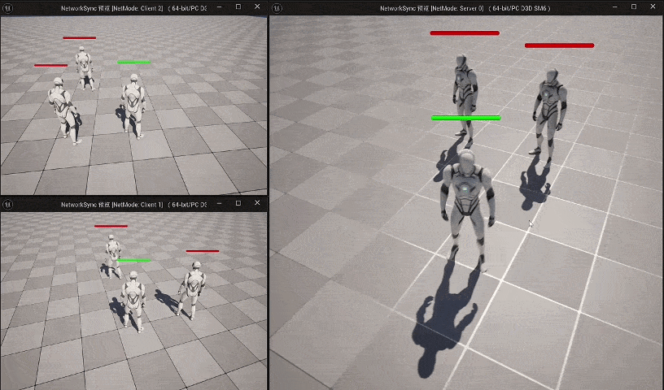

UE 开发（VR / 数字孪生 · 游戏客户端）· 2027 届本科
湖北工业大学数字媒体技术专业 27 届应届生，熟悉 UE / C++，目前有 3 个独立完成的 Demo、一个性能优化案例。
求职方向：VR / 数字孪生应用开发 · 游戏客户端开发
针对自建 UE5 静态场景的一次完整性能优化：从数据量化定位 CPU 渲染提交瓶颈， 到阴影、合批、光追三项优化落地，并逐项复测验证收益。
用 stat unit / Stat SceneRendering / Stat InitViews 逐层下钻，
确认瓶颈在 CPU 渲染提交侧：Draw 12.83ms ≈ Frame，而 GPU 仅 6.07ms，
且静态网格元素仅 6 个，合批严重不足。
Directional Light 改 Stationary，Dynamic Shadow Distance 40000→8000、级联 4→2； 小物件关闭 Cast Shadow，大件烘焙阴影并放置 Lightmass Importance Volume。
按「同网格 + 同材质」筛选纯净子集分批生成 ISM/HISM（单批＜200）， 包围盒过大者再按区块拆分，兼顾视锥剔除，避免“全进全出”导致的剔除失效。
Stationary 烘焙已能提供优质间接光，关闭硬件光追改用软件追踪， 渲染线程绑定压力显著缓解，画质影响极小，帧率再提升约 14%。
| 指标 | 优化前 | 优化后 | 提升幅度 |
|---|---|---|---|
| 帧率 FPS | 79 | 108 | +36.7% |
| Frame 帧时间 (ms) | 12.84 | 9.19 | -28.4% |
| Draw 耗时 (ms) | 12.83 | 9.33 | -27.3% |
| RHIT (ms) | 6.73 | 3.91 | -41.9% |
| GPU Time (ms) | 6.07 | 4.84 | -20.3% |
| Draws 总绘制调用 | 436 | 198 | -54.6% |
| DrawPrimitive Calls | 537.2 | 258.13 | -51.9% |
| Triangles Drawn | 101K | 55.6K | -44.9% |
| Processed Primitives | 2485 | 891 | -64.1% |
| Visible Raytracing Primitives | 1912 | 610 | -68.1% |

围绕四大核心系统落地玩法设计：
• 交互与检视：结构化基类 + 射线检测 + 事件驱动，响应准确率 100%；
• 背包管理：三层分类（固有/流程/剧情）+ 数据表配置 + 逻辑与表现分离；
• 传送系统：TMap 键值对管理，激活/灰度状态，支持无限传送点；
• 场景音效：物理材质识别 + 射线检测，动态播放脚步声，提升沉浸感。
湖北工业大学 · 数字媒体技术 · 本科 · 2023–2027
英语 CET-6 | 校级优秀大学生 | 绩点排名 4/42